Git

git conflicts
Branching
Sometimes you want to experiment with a new feature or make a change that might break things, could get messy to do this with commit and then revert if it doesn’t work
Git thought of this and created branching
Branching allows you to create a separate version of your code where you can make changes without affecting the main version (called main branch)
Later once branch is working you can, if desired, merge into main branch
Branching

git branchings
Lets try
working in your class repo
create a new branch called experiment
add a new quarto document, and in it describe some data analysis that you’d like to experiment with
Merging
in a collaborative project, or if you want to maintain a good copy of your code, you might want to merge branch back into main
go back to main branch on git
pull to get any recent changes
click merge and select the branch you want to merge in
or in terminal
git merge experiment
Try it
Forking
Forking is more removed than branching - it creates a new (copy) of the entire repository under your GitHub account
Forks are their own repo
How do forks interact with original? - fork can pull from original repo - to integrate back to original pull request is initiated and owner of original decides whether to accept it
Forks are good when you are working independently - might not want to integrate changes - not closely collaborating with owner of original
We won’t practice forks here but good to know